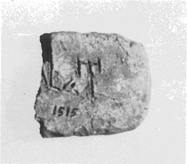
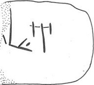

LINEAR A
PH14b
Names
PH14b, PH 14b
Support
Lames (short thin tablet)
Location
Phaistos
Findspot
Unavailable


Scribe
Unavailable
Context
Not Available
Dimensions
Catalogue
Hiraklion Museum
Readings
1 1 0 A none 1 1 0 MI none
𐘇
𐘻
A
MI
𐘇
𐘻
A
MI
PH 14
, "lame"/horizontal tablet (HM 1515) (GORILA I: 304-305; Vano 25, MM II context)
side.line
statement
logogram
number
fraction
b (obverse? [inscription starts with A-, read retrograde])
A-
MI
-[
a (reverse? [read retrograde, with word + commodity FIC])
]JA-*304
FIC
a: JA over [[-JA]].
Commentary © John Younger
References
papers/GORILA-Vol1.pdf#page=340